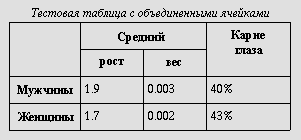
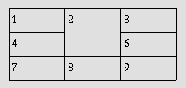
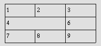
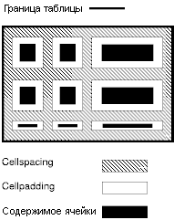
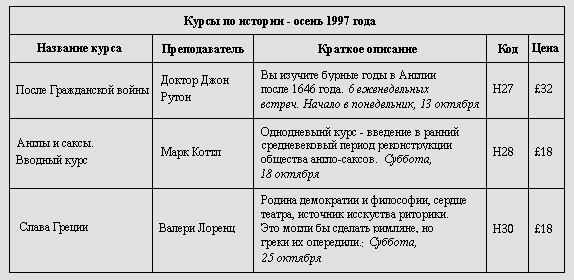
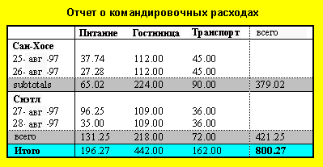
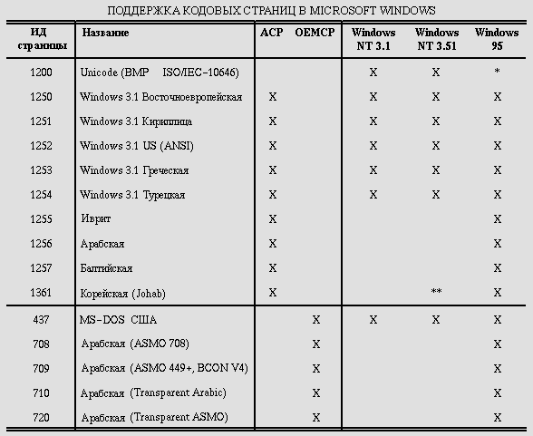

Содержание
Модель таблиц HTML позволяет авторам упорядочивать данные -- текст, форматированный текст, изображения, ссылки, формы, поля форм, другие таблицы и т.д. - в строки и столбцы ячеек.
С каждой таблицей может быть связан заголовок (см. элемент CAPTION), предоставляющий краткое описание таблицы. Можно также указать и более длинное описание (с помощью атрибута summary) для удобства людей, использующих агенты на базе азбуки Бройля или речи.
Строки таблицы могут группироваться в разделы заголовков, нижних заголовков и тела, (с помощью элементов THEAD, TFOOT и TBODY соответственно). Группы строк convey дополнительную структурную информацию и могут генерироваться агентами пользователей различными способами, отображающими эту структуру. Агенты пользователей могут использовать подразделение на заголовки/тело/нижние заголовки для поддержки прокрутки тела независимо от заголовков. При печати длинных таблиц информация из заголовков может повторяться на каждой странице таблицы.
Авторы также могут группировать столбцы для предоставления дополнительной структурной информации, которая может использоваться агентами пользователей. Более того, авторы могут объявлять свойства столбцов в начале определения таблицы (с помощью элементов COLGROUP и COL) таким образом, который позволяет агентам пользователей генерировать таблицу последовательно, а не ждать считывания всех данных таблицы перед тем, как начать генерацию.
Ячейки таблицы могут содержать "заголовок" (см. элемента TH) или "данные" (см. элемент TD). Ячейки могут распространяться на несколько строк или столбцов. Модель таблиц языка HTML 4.0 позволяет авторам помечать каждую ячейку, так что невизуальным агентам пользователей будет проще работать с информацией о ячейках. Эти механизмы не только существенно облегчают доступ пользователям с физическими недостатками, но и делают его обработку таблиц возможной для мультирежимных беспроводных браузеров с ограниченными возможностями отображения (например, Web-совместимых пейджеров и телефонов).
Не следует использовать таблицы только как средство компоновки содержимого документа, поскольку это может вызвать проблемы при генерации для невизуальных средств. Кроме того, если метки использовать с графикой, это может привести к тому, что пользователям придется выполнять горизонтальную прокрутку, чтобы просмотреть таблицу, созданную в системе с большим экраном. Для уменьшения возможности этих проблем авторам следует использовать для компоновки документа таблицы стилей, а не таблицы.
Примечание. В этой спецификации более подробная информация о таблицах приводится в разделах о вопросах применения и rationale создания таблиц.
Ниже показана простая таблица, на примере которой иллюстрируются некоторые возможности модели таблиц языка HTML. Следующее определение:
<TABLE border="1"
summary="В этой таблице приводится некоторая статистика о фруктовых мухах:
средняя высота и вес, процент мух с красными глазами (особей мужского и женского пола).">
<CAPTION><EM>Тестовая таблица с объединенными ячейками</EM></CAPTION>
<TR><TH rowspan="2"><TH colspan="2">Средний
<TH rowspan="2">Красные<BR>глаза
<TR><TH>высота<TH>вес
<TR><TH>мужской пол<TD>1.9<TD>0.003<TD>40%
<TR><TH>женский пол<TD>1.7<TD>0.002<TD>43%
</TABLE>
должно генерироваться на терминале примерно следующим образом:
Тестовая таблица с объединенными ячейками
/----------------------------------------------------------\
| | Средний | Красные |
| |-------------------| глаза |
| | высота | вес | |
|----------------------------------------------------------|
| Мужской пол | 1.9 | 0.003 | 40% | |
|----------------------------------------------------------|
| Женский пол | 1.7 | 0.002 | 43% | |
\----------------------------------------------------------/
или следующим образом - графическими агентами пользователей:

<!ELEMENT TABLE - - (CAPTION?, (COL*|COLGROUP*), THEAD?, TFOOT?, TBODY+)> <!ATTLIST TABLE -- таблица -- %attrs; -- %coreattrs, %i18n, %events -- summary %Text; #IMPLIED -- цель/структура для речевого вывода -- width %Length; #IMPLIED -- ширина таблицы -- border %Pixels; #IMPLIED -- толщина рамки вокруг таблицы -- frame %TFrame; #IMPLIED -- какие части рамки нужно генерировать -- rules %TRules; #IMPLIED -- rulings между строками и столбцами -- cellspacing %Length; #IMPLIED -- расстояние между ячейками -- cellpadding %Length; #IMPLIED -- расстояние внутри ячеек -- >
Начальный тег: обязателен, конечный тег: обязателен
Определения атрибутов
Атрибуты, определяемые в любом другом месте
Элемент TABLE содержит все другие элементы, определяющие заголовок, строки, содержимое и форматирование.
В следующем списке описано, какие операции может выполнять агент пользователя при генерации таблиц:
Модель таблиц HTML разработана так, чтобы с помощью автора агенты пользователей могли генерировать таблицы последовательно (т.е. по мере получения строк таблицы), а не ждали получения всей таблицы до начала генерации.
Чтобы агенты пользователей могли форматировать таблицу за один проход, авторы должны сообщить агентам пользователей следующую информацию:
Более точно агент пользователя может сгенерировать таблицу за один проход, когда ширина столбцов указана с использованием комбинации элементов COLGROUP и COL. Если для какого-либо столбца указана относительная ширина или ширина в процентах (см. раздел о подсчете ширины столбцов), авторы должны также указать ширину самой таблицы.
Направление таблицы либо наследуется (по умолчанию используется направление слева направо), либо определяется атрибутом dir элемента TABLE.
Для таблиц, направление которых слева направо, нулевой столбец находится слева, а нулевая строка - сверху. Для таблиц, направление которых справа налево, нулевой столбец находится справа, а нулевая строка - сверху.
Если агент пользователя allots в строку дополнительные ячейки (см. раздел о подсчете числа столбцов в таблице), дополнительные ячейки строки добавляются в таблицу справа для таблиц, имеющих направление слева направо, и слева для таблиц, имеющих направление справа налево.
Помните, что TABLE - единственный элемент, для которого атрибут dir обращает визуальный порядок столбцов; нельзя изменить порядок одной строки (TR) или группы столбцов (COLGROUP).
Если для элемента TABLE установлен атрибут dir, он также влияет на направление текста в ячейках таблицы (поскольку атрибут dir наследуется элементами уровня блока).
Чтобы определить таблицу с направлением справа налево, установите атрибут dir следующим образом:
<TABLE dir="RTL"> ...продолжение таблицы... </TABLE>
Направление текста в отдельных ячейках можно изменить, установив атрибут dir для элемента, определяющего ячейку. Подробнее о вопросах направления текста см. в разделе о двунаправленном тексте.
<!ELEMENT CAPTION - - (%inline;)* -- caption таблицы --> <!ENTITY % CAlign "(top|bottom|left|right)"> <!ATTLIST CAPTION %attrs; -- %coreattrs, %i18n, %events -- >
Начальный тег: обязателен, конечный тег: обязателен
Определения атрибутов
Атрибуты, определяемые в любом другом месте
Если элемент CAPTION присутствует, его текст должен описывать предмет таблицы. Элемент CAPTION может располагаться только непосредственно после начального тега TABLE. Элемент TABLE может включать только один элемент CAPTION.
Визуальные агенты пользователей позволяют sighted people быстро grasp структуру таблицы из заголовков и caption. Последствием этого является то, что captions не будут совпадать с краткими описаниями назначения и структуры таблицы с точки зрения людей, использующих невизуальные агенты.
Таким образом, авторы должны позаботиться о предоставлении дополнительной информации, описывающей назначение и структуру таблицы с помощью атрибута summary элемента TABLE. Это особенно важно для таблиц, не имеющих captions. На примерах ниже показано использование атрибута summary.
Визуальные агенты пользователей должны избегать clipping любой части таблицы, включая caption, если не предоставлено средство доступа ко всем частям, например, с помощью горизонтальной или вертикальной прокрутки. Мы рекомендуем, чтобы текст caption разбивался так, чтобы иметь ту же ширину, что и таблица. (См. также раздел о рекомендуемых алгоритмах компоновки.)
<!ELEMENT THEAD - O (TR)+ -- заголовок таблицы --> <!ELEMENT TFOOT - O (TR)+ -- нижний заголовок таблицы -->
Начальный тег: обязателен, конечный тег: необязателен
<!ELEMENT TBODY O O (TR)+ -- тело таблицы -->
Начальный тег: необязателен, конечный тег: необязателен
<!ATTLIST (THEAD|TBODY|TFOOT) -- раздел таблицы -- %attrs; -- %coreattrs, %i18n, %events -- %cellhalign; -- горизонтальное выравнивание в ячейках -- %cellvalign; -- вертикальное выравнивание в ячейках -- >
Атрибуты, определяемые в любом другом месте
Строки таблицы могут группироваться в заголовки, нижние заголовки и один или несколько разделов тела таблицы с помощью элементов THEAD, TFOOT и TBODY соответственно. Это подразделение позволяет агентам пользователей поддерживать прокрутку тела таблицы независимо от заголовков. При печати длинных таблиц информация из заголовков может повторяться на каждой странице, на которой имеются данные таблицы.
Заголовки таблицы должны содержать информацию о столбцах таблицы. Тело таблицы должно содержать строки данных таблицы.
Если элементы THEAD, TFOOT и TBODY присутствуют, каждый из них содержит группу строк. Каждая группа строк должна содержать по крайней мере одну строку, определяемую элементом TR.
В этом примере показан порядок и структура заголовков таблицы, нижних заголовков и тел.
<TABLE>
<THEAD>
<TR> ...заголовок...
</THEAD>
<TFOOT>
<TR> ...нижний заголовок...
</TFOOT>
<TBODY>
<TR> ...первая строка данных блока 1...
<TR> ...вторая строка данных блока 1...
</TBODY>
<TBODY>
<TR> ...первая строка данных блока 2...
<TR> ...вторая строка данных блока 2...
<TR> ...третья строка данных блока 2...
</TBODY>
</TABLE>
Элемент TFOOT должен располагаться до элемента TBODY в определении TABLE, чтобы агенты пользователей могли генерировать нижний заголовок до получения всех (возможно, многочисленных) строк данных. Ниже приводится сводка обязательных тегов и тегов, которые можно опустить:
Соответствующий спецификации агент пользователя при разборе должен obey эти правила из соображений совместимости с предыдущими версиями.
Таблицу из предыдущего примера можно сократить, удалив конечные теги, как показано ниже:
<TABLE>
<THEAD>
<TR> ...верхний заголовок...
<TFOOT>
<TR> ...нижний заголовок...
<TBODY>
<TR> ...первая строка данных блока 1...
<TR> ...вторая строка данных блока 1...
<TBODY>
<TR> ...первая строка данных блока 2...
<TR> ...вторая строка данных блока 2...
<TR> ...третья строка данных блока 2...
</TABLE>
Разделы THEAD, TFOOT и TBODYдолжны содержать одинаковое число столбцов.
Группы столбцов позволяют создавать структурные подразделения внутри таблицы. Авторы могут выделять такую структуру с помощью таблиц стилей или атрибутов HTML (например, атрибут rules для элемента TABLE). Пример визуального представления группы столбцов см. в примере таблицы.
Таблица может содержать одну неявную группу столбцов (элемент COLGROUP не разделяет столбцы) или любое число явных групп столбцов (каждая из которых отделяется одним экземпляром элемента COLGROUP).
Элемент COL позволяет авторам использовать одни и те же атрибуты в различных столбцах, не используя структурной группировки. "span" элемента COL - это число столбцов, использующих атрибуты этого элемента.
<!ELEMENT COLGROUP - O (col)* -- группа столбцов таблицы --> <!ATTLIST COLGROUP %attrs; -- %coreattrs, %i18n, %events -- span NUMBER 1 -- число столбцов в группе, используемое по умолчанию -- width %MultiLength; #IMPLIED -- ширина для вложенных элементов COL, используемая по умолчанию -- %cellhalign; -- горизонтальное выравнивание в ячейках -- %cellvalign; -- вертикальное выравнивание в ячейках -- >
Начальный тег: обязателен, Конечный тег: необязателен
Определения атрибутов
Агенты пользователей должны игнорировать этот атрибут, если элемент COLGROUP содержит один или несколько элементов COL.
Этот атрибут определяет ширину каждого столбца в текущей группе, используемую по умолчанию. Кроме стандартных значений в пикселах, процентах и относительных значений, в этом атрибуте может использоваться специальная форма "0*" (ноль со звездочкой), которая означает, что ширина каждого столбца в группе должна быть минимальной, необходимой для размещения содержимого столбца. Подразумевается, что содержимое столбца известно до того, как можно будет корректно вычислить его ширину. Авторы должны знать, что использование "0*" не позволит агентам пользователей генерировать таблицу последовательно.
Этот атрибут переопределяется для любого столбца из группы, для которого значение атрибута width задано в элементе COL.
Атрибуты, определяемые в любом другом месте
Элемент COLGROUP создает явную группу столбцов. Число столбцов в группе может быть указано двумя взаимоисключающими способами:
Преимуществом использования атрибута span является то, что авторы могут группировать информацию о ширине столбцов. Таким образом, если в таблице содержится сорок столбцов, каждый из которых имеет ширину 20 пикселов, проще написать:
<COLGROUP span="40" width="20"> </COLGROUP>
чем:
<COLGROUP>
<COL width="20">
<COL width="20">
...все сорок элементов COL...
</COLGROUP>
Если необходимо выделить столбец (например, для информации о стиле, для указания информации о ширине и т.д.) в группе, авторы должны определить этот столбец с помощью элемента COL. Таким образом, чтобы применить специальную информацию о стиле к последнему столбцу предыдущей таблице, мы выделяем его следующим образом:
<COLGROUP width="20">
<COL span="39">
<COL id="format-me-specially">
</COLGROUP>
Атрибут width элемента COLGROUP наследуют все сорок столбцов. Первый элемент COL относится к первым 39 столбцам (ничего особенного для них не делая), а второй назначает значение idсороковому столбцу, так что на него можно будет ссылаться в таблицах стилей.
Таблица в следующем примере содержит две группы столбцов. Первая группа включает 10 столбов, вторая - 5. Ширина по умолчанию для каждого столбца в первой группе - 50 пикселов. Ширина каждого столбца во второй группе - минимальная, необходимая для этого столбца.
<TABLE> <COLGROUP span="10" width="50"> <COLGROUP span="5" width="0*"> <THEAD> <TR><TD> ... </TABLE>
<!ELEMENT COL - O EMPTY -- столбец таблицы --> <!ATTLIST COL -- группы и свойства столбцов -- %attrs; -- %coreattrs, %i18n, %events -- span NUMBER 1 -- атрибут COL влияет на N столбцов -- width %MultiLength; #IMPLIED -- ширина столбца -- %cellhalign; -- горизонтальное выравнивание в ячейках -- %cellvalign; -- вертикальное выравнивание в ячейках -- >
Начальный тег: обязателен, Конечный тег: запрещен
Определения атрибутов
Атрибуты, определяемые в любом другом месте
Элемент COL позволяет авторам группировать определения атрибутов для столбцов таблицы. Атрибут COL не группирует столбцы структурно - эту роль играет элемент COLGROUP. Элементы COL являются пустыми и служат только для поддержания атрибутов. Они могут находиться внутри или вне явной группы столбцов (т.е. элемента COLGROUP).
Атрибут width для элемента COL означает ширину каждого столбца в span элемента.
Имеется два способа определения числа столбцов в таблице (в порядке старшинства):
Если таблица содержит элементы COLGROUP или COL, и эти два способа подсчет дают разные результаты, это является ошибкой.
Когда агент пользователя подсчитал число столбцов в таблице, он может сгруппировать их в группы столбцов.
Например, для каждой из следующих таблиц, оба способа подсчета числа столбцов должны дать три столбца. Первые три таблицы могут генерироваться последовательно.
<TABLE> <COLGROUP span="3"></COLGROUP> <TR><TD> ... ...строки... </TABLE> <TABLE> <COLGROUP> <COL> <COL span="2"> </COLGROUP> <TR><TD> ... ...строки... </TABLE> <TABLE> <COLGROUP> <COL> </COLGROUP> <COLGROUP span="2"> <TR><TD> ... ...строки... </TABLE> <TABLE> <TR> <TD><TD><TD> </TR> </TABLE>
Авторы могут указывать ширину столбцов тремя способами:
Однако если ширина таблицы не фиксирована, агенты пользователей должны получить все данные таблицы перед тем, как они смогут определить горизонтальное пространство, необходимое для таблицы. Только тогда это пространство может быть распределено между столбцами, для которых указана пропорциональная ширина.
Если автор не указывает для столбца информацию о ширине, агент пользователя не сможет форматировать таблицу последовательно, поскольку он вынужден будет ждать получения всех данных столбца для определения его ширины.
Если указанная для столбца ширина недостаточна для размещения содержимого какой-либо ячейки, агенты пользователей могут переформатировать таблицу.
Таблица в этом примере содержит шесть столбцов. Первый не принадлежит к явной группе столбцов. Следующие три образуют первую явную группу столбцов, а последние два - вторую явную группу столбцов. Эту таблицу нельзя отформатировать последовательно, поскольку она содержит столбцы пропорциональной ширины, а значение атрибута width для элемента TABLE не указано.
Когда агент пользователя (визуальный) получит данные таблицы, доступное горизонтальное пространство будет распределяться агентом пользователя следующим образом: сначала агент пользователя распределит 30 пикселов на первый и второй столбец. Затем будет зарезервировано минимальное пространство, необходимое для третьего столбца. Оставшееся горизонтальное пространство будет разделено на шесть равных частей (поскольку 2* + 1* + 3* = 6 частей). Четвертый столбец (2*) получит две таких части, пятый (1*) - одну, а шестой - (3*) три.
<TABLE> <COLGROUP> <COL width="30"> <COLGROUP> <COL width="30"> <COL width="0*"> <COL width="2*"> <COLGROUP align="center"> <COL width="1*"> <COL width="3*" align="char" char=":"> <THEAD> <TR><TD> ... ...строки... </TABLE>
Для атрибута align во второй группе столбцов мы установили значение "center". Все ячейки в каждом столбце этой группы будут наследовать это значение, но могут переопределять его. В действительности последний элемент COL делает именно это, потому что в нем указано, что каждая ячейка столбца, которым он управляет, будет выровнена с использованием символа ":".
В следующей таблице спецификации ширины столбца позволяют агентам пользователя форматировать таблицу последовательно:
<TABLE width="200"> <COLGROUP span="10" width="15"> <COLGROUP width="*"> <COL id="penultimate-column"> <COL id="last-column"> <THEAD> <TR><TD> ... ...строки... </TABLE>
Первые десять столбцов имеют ширину 15 пикселов каждый. Последние два столбца получают по половине из оставшихся 50 пикселов. Помните, что элемент COL расположен так, что значение id можно указать только для последних двух столбцов.
Примечание. Хотя атрибут width элемента TABLE не является нежелательным, авторам рекомендуется использовать для указания ширины таблицы стилей.
<!ELEMENT TR - O (TH|TD)+ -- строка таблицы --> <!ATTLIST TR -- строка таблицы -- %attrs; -- %coreattrs, %i18n, %events -- %cellhalign; -- горизонтальное выравнивание в ячейках -- %cellvalign; -- вертикальное выравнивание в ячейках -- >
Начальный тег: обязателен, Конечный тег: не обязателен
Атрибуты, определяемые в любом другом месте
Элементы TR служат контейнерами для строки ячеек таблицы. Конечный тег можно опустить.
Эта простая таблица состоит из трех строк, каждая из которых начинается с элемента TR:
<TABLE summary="В этой таблице показан график числа
чашек кофе, выпиваемых каждым сенатором, тип
кофе (без кофеина или обычный) и наличие сахара.">
<CAPTION>Сколько чашек кофе выпивает каждый сенатор</CAPTION>
<TR> ...Строка заголовка...
<TR> ...Первая строка данных...
<TR> ...Вторая строка данных...
...продолжение таблицы...
</TABLE>
<!ELEMENT (TH|TD) - O (%flow;)* -- ячейка заголовка таблицы, ячейка данных таблицы --> <!-Для большинства таблиц атрибут scope проще, чем атрибут axes --> <!ENTITY % Scope "(row|col|rowgroup|colgroup)"> <!-- TH используется для заголовков, TD - для данных, но для ячеек, служащих и тем, и другим используйте TD --> <!ATTLIST (TH|TD) -- заголовок ячейки данных -- %attrs; -- %coreattrs, %i18n, %events -- abbr %Text; #IMPLIED -- сокращение для ячейки заголовка -- axis CDATA #IMPLIED -- группы имен связанных заголовков -- headers IDREFS #IMPLIED -- список id для ячеек заголовков -- scope %Scope; #IMPLIED -- область ячеек заголовков -- rowspan NUMBER 1 -- число строк, spanned ячейкой -- colspan NUMBER 1 -- число столбцов, spanned ячейкой -- %cellhalign; -- горизонтальное выравнивание в ячейках -- %cellvalign; -- вертикальное выравнивание в ячейках -- >
Начальный тег: обязателен, Конечный тег: не обязателен
Определения атрибутов
Атрибуты, определяемые в любом другом месте
Ячейки таблицы могут содержать информацию двух типов: заголовочную информацию и данные. Это различие позволяет агентам пользователей генерировать ячейки заголовков и данных различным образом даже при отсутствии таблиц стилей. Например, визуальные агенты пользователей могут представлять текст ячеек заголовков жирным шрифтом. Синтезаторы речи могут выделять заголовочную информацию голосом.
Элемент TH определяет ячейку, содержащую информацию заголовка. Агентам пользователей доступны две части заголовочной информации: содержимое элемента TH и значение атрибута abbr. Агенты пользователей должны генерировать содержимое ячейки или значение атрибута abbr. Для визуальных устройств последнее может иметь смысл, если пространства для генерации полного содержимого ячейки недостаточно. Для невизуальных устройств abbr может использоваться в качестве сокращения для заголовков таблиц, когда они генерируются вместе с содержимым ячеек, к которым они относятся.
Атрибуты headers и scope также позволяют авторам помочь невизуальным агентам пользователей в обработке информации заголовка. Подробную информацию и примеры см. в разделе о пометке ячеек для невизуальных агентов пользователей.
Элемент TD определяет ячейку, содержащую данные.
Ячейка может быть пустой (т.е. не содержать данных).
Например, в следующей таблице содержится четыре столбца данных, каждый столбец имеет заголовок.
<TABLE summary="В этой таблице показан график числа
чашек кофе, выпиваемых каждым сенатором, тип
кофе (без кофеина или обычный) и наличие сахара.">
<CAPTION>Сколько чашек кофе выпивает каждый сенатор</CAPTION>
<TR>
<TH>Имя</TH>
<TH>Число чашек</TH>
<TH>Тип кофе</TH>
<TH>Сахар?</TH>
<TR>
<TD>Т. Секстон</TD>
<TD>10</TD>
<TD>Эспрессо</TD>
<TD>Нет</TD>
<TR>
<TD>Дж. Диннен</TD>
<TD>5</TD>
<TD>Без кофеина</TD>
<TD>Да</TD>
</TABLE>
Агент пользователя, выполняющий генерацию для терминала, может отобразить это следующим образом:
Имя Число чашек Тип кофе Сахар? Т. Секстон 10 Эспрессо Нет Дж. Диннен 5 Без кофеина Да
Ячейки могут span несколько строк или столбцов. Число строк или столбцов, spanned ячейкой, устанавливается с помощью атрибутов rowspan и colspan элементов TH и TD.
В этом определении таблицы мы указываем, что ячейка в четвертой строке во втором столбце span все три столбца, включая текущий.
<TABLE border="1"> <CAPTION> Сколько чашек кофе выпивает каждый сенатор </CAPTION> <TR><TH>Имя<TH>Число чашек<TH>Тип кофе<TH>Сахар? <TR><TD>Т. Секстон<TD>10<TD>Эспрессо<TD>Нет <TR><TD>Дж. Диннен<TD>5<TD>Без кофеина<TD>Да <TR><TD>А. Сориа<TD colspan="3"><em>Нет данных</em> </TABLE>
На терминале эта таблица может генерироваться следующим образом:
Сколько чашек кофе выпивает каждый сенатор ---------------------------------------------- | Имя |Число чашек|Тип кофе |Сахар?| ---------------------------------------------- |Т. Секстон|10 |Эспрессо |Нет | ---------------------------------------------- |Дж. Диннен|5 |Без кофеина |Да | ---------------------------------------------- |А. Сориа |Нет данных | ----------------------------------------------
В следующем примере показано (с помощью границ таблицы), как определения ячеек, span несколько строк или столбцов, влияют на определения следующих ячеек. Рассмотрите следующее определение таблицы:
<TABLE border="1"> <TR><TD>1 <TD rowspan="2">2 <TD>3 <TR><TD>4 <TD>6 <TR><TD>7 <TD>8 <TD>9 </TABLE>
Поскольку ячейка "2" spans первую и вторую строки, определение второй строки будет принято во внимание. Таким образом, второй элемент TD в строке два в действительности определяет третью ячейку строки. Визуально на терминале таблица может генерироваться следующим образом:
------------- | 1 | 2 | 3 | ----| |---- | 4 | | 6 | ----|---|---- | 7 | 8 | 9 | -------------
а графический агент пользователя может представить ее так:

Помните, что, если элемент TD, определяющий ячейку "6", опущен, агенты пользователя будут добавлять дополнительную пустую ячейку, чтобы заполнить строку.
Точно так же в следующем определении таблицы:
<TABLE border="1"> <TR><TD>1 <TD>2 <TD>3 <TR><TD colspan="2">4 <TD>6 <TR><TD>7 <TD>8 <TD>9 </TABLE>
ячейка "4" spans два столбца, так что второй элемент TD в строке на самом деле определяет третью ячейку ("6"):
------------- | 1 | 2 | 3 | --------|---- | 4 | 6 | --------|---- | 7 | 8 | 9 | -------------
Графический агент пользователя может представить это следующим образом:

Определение перекрывающихся ячеек является ошибкой. Агенты пользователей могут по-разному обрабатывать эту ошибку (например, они могут по-разному генерировать такие таблицы).
В следующем примере недопустимого использования показано, как можно создать перекрывающиеся ячейки. В этой таблице ячейка "5" spans две строки, а ячейка "7" spans два столбца, так что они обе используют ячейку между "7" и "9":
<TABLE border="1"> <TR><TD>1 <TD>2 <TD>3 <TR><TD>4 <TD rowspan="2">5 <TD>6 <TR><TD colspan="2">7 <TD>9 </TABLE>
Примечание. В следующих разделах описываются атрибуты таблиц HTML, относящиеся к визуальному форматированию. Хотя таблицы стилей предлагают лучшие возможности управления визуальным форматированием таблиц, во время написания этой спецификации в [CSS1] не было механизмов для управления всеми аспектами визуального форматирования таблиц.
В HTML 4.0 имеются механизмы для управления:
Следующие атрибуты влияют на внутренние кадры и внутренние rules таблицы.
Определения атрибутов
Для простоты различия ячеек в таблице мы можем устанавливать атрибут border элемента TABLE. Рассмотрим предыдущий пример:
<TABLE border="1"
summary="В этой таблице приведены данные
о числе чашек кофе, потребляемом каждым
сенатором, типе кофе (без кофеина или обычный)
и наличии сахара.">
<CAPTION>Сколько чашек кофе выпивает каждый сенатор</CAPTION>
<TR>
<TH>Имя</TH>
<TH>Число чашек</TH>
<TH>Тип кофе</TH>
<TH>Сахар?</TH>
<TR>
<TD>Т. Секстон</TD>
<TD>10</TD>
<TD>Эспрессо</TD>
<TD>Нет</TD>
<TR>
<TD>Дж. Диннен</TD>
<TD>5</TD>
<TD>Без кофеина</TD>
<TD>Да</TD>
</TABLE>
В следующем примере агент пользователя должен отобразить границу шириной в пять пикселов слева и справа от таблицы и rules между столбцами.
<TABLE border="5" frame="vsides" rules="cols"> <TR> <TD>1 <TD>2 <TD>3 <TR> <TD>4 <TD>5 <TD>6 <TR> <TD>7 <TD>8 <TD>9 </TABLE>
Следующие настройки должны рассматриваться агентами пользователей для обеспечения совместимости с предыдущими версиями.
Например, следующие определения эквивалентны:
<TABLE border="2"> <TABLE border="2" frame="border" rules="all">
следующим:
<TABLE border> <TABLE frame="border" rules="all">
Примечание. Атрибут border также определяет отображение границы для элементов OBJECT и IMG, но принимает для этих элементов различные значения.
Для различных элементов таблицы можно установить следующие атрибуты (см. их определения).
<!- атрибуты горизонтального выравнивания содержимого ячейки --> <!ENTITY % cellhalign "align (left|center|right|justify|char) #IMPLIED char %Character; #IMPLIED -- символы выравнивания, например char=':' -- charoff %Length; #IMPLIED -- отступ символа выравнивания --" ><!-атрибуты вертикального выравнивания содержимого ячейки --><!ENTITY % cellvalign "valign (top|middle|bottom|baseline) #IMPLIED" >
Определения атрибутов
Если для установления смещения символа выравнивания используется атрибут charoff, направление смещения определяется текущим направлением текста (устанавливаемым атрибутом dir). В текста, направленных слева направо (по умолчанию), смещение производится от левого поля. В текстах, направленных справа налево, смещение производится от правого поля. Агенты пользователей не обязательно должны поддерживать этот атрибут.
В этом примере денежные единицы выровнены по десятичной точке. Мы явно установили выравнивание по символу ".".
<TABLE border="1"> <COLGROUP> <COL><COL align="char" char="."> <THEAD> <TR><TH>Овощи <TH>Цена за кг <TBODY> <TR><TD>Lettuce <TD>$1 <TR><TD>Silver carrots <TD>$10.50 <TR><TD>Golden turnips <TD>$100.30 </TABLE>
Отформатированная таблица может выглядеть следующим образом:
------------------------------ | Овощи |Цена за кг | |--------------|-------------| |Lettuce | $1 | |--------------|-------------| |Silver carrots| $10.50| |--------------|-------------| |Golden turnips| $100.30| ------------------------------
Если в ячейке содержится несколько экземпляров символов выравнивания, заданных в атрибуте char, и содержимое ячейки переносится на другую строку, поведение агента пользователя не определено. Поэтому авторы должны внимательно использовать атрибут char.
Примечание. Визуальные агенты пользователей обычно генерируют элементы TH выровненными вертикально и горизонтально по центру с использованием полужирного шрифта.
Выравнивание содержимого ячейки могут задаваться для каждой ячейки или наследоваться от элементов верхнего уровня, таких как строка, столбец или сама таблица.
Приоритет (от высшего к низшему) атрибутов align, char и charoff следующий:
Приоритет (от высшего к низшему) атрибута valign (а также других унаследованных атрибутов lang, dir и style) следующий:
Кроме того, при генерации ячеек горизонтальное выравнивание определяется сначала для столбцов, а потом для строк, а вертикальное выравнивание - для строк, а потом для столбцов.
Выравнивание ячеек по умолчанию зависит от агента пользователя. Однако агенты пользователя должны подставлять атрибут по умолчанию соответственно текущем направлению (то есть не просто "left" во всех случаях).
Агенты пользователя, не поддерживающие значение "justify" атрибута align должны использовать значение, соответствующее направлению.
Определения атрибутов
Эти два атрибута управляют расстоянием между ячейками и внутри них. Они объясняются на следующей иллюстрации:

В следующем примере атрибут cellspacing задает расстояние в двадцать пикселов между ячейками и от края таблицы. Атрибут cellpadding определяет, что верхнее и нижнее поля ячейки отделяются от содержимого ячейки на 10% доступного вертикального пространства (всего 20%). Точно так же, левое и правое поле ячейки будут отделены от содержимого на 10% доступного горизонтального пространства (всего 20%).
<TABLE cellspacing="20" cellpadding="20%"> <TR> <TD>Данные1 <TD>Данные2 <TD>Данные3 </TABLE>
Если таблица или данный столбец имеет фиксированную ширину, cellspacing и cellpadding могут занимать больше пространства, чем назначено. Агенты пользователей могут давать этим атрибутам приоритет над атрибутом width в случае конфликта, но они не обязательно должны это делать.
Невизуальные агенты пользователей, такие как синтезаторы речи и устройства на базе азбуки Бройля, могут использовать следующие атрибуты элементов TD и TH для более intuitive генерации ячеек таблицы:
В следующем примере мы назначаем информацию заголовка ячейкам, устанавливая атрибут headers. Каждая ячейка в одном и том же столбце относится к одной и той же ячейке заголовка (с помощью атрибута id).
<TABLE border="1"
summary="В этой таблице приводится информация о том, сколько
чашек кофе выпивает каждый сенатор, о типа кофе
(без кофеина или обычный) и о сахаре.">
<CAPTION>Сколько чашек кофе выпивает каждый сенатор</CAPTION>
<TR>
<TH id="t1">Имя</TH>
<TH id="t2">Сколько</TH>
<TH id="t3" abbr="Тип">Тип кофе</TH>
<TH id="t4">Сахар?</TH>
<TR>
<TD headers="t1">Т. Секстон</TD>
<TD headers="t2">10</TD>
<TD headers="t3">Эспрессо</TD>
<TD headers="t4">Нет</TD>
<TR>
<TD headers="t1">Дж. Диннен</TD>
<TD headers="t2">5</TD>
<TD headers="t3">Без кофеина</TD>
<TD headers="t4">Да</TD>
</TABLE>
Синтезатор речи может генерировать эту таблицу следующим образом:
Заголовок: Сколько чашек кофе выпивает каждый сенатор
Summary: В этой таблице приводится информация о том, сколько
чашек кофе выпивает каждый сенатор, о типа кофе
(без кофеина или обычный) и о сахаре.
Имя: Т. Секстон, Сколько: 10, Тип: Эспрессо, Сахар: Нет
Имя: Дж. Диннен, Сколько: 5, Тип: Без кофеина, Сахар: Да
Заметьте, что заголовок "Тип кофе" сокращается до "Тип" с помощью атрибута abbr.
Вот тот же пример, использующий атрибут scope вместо атрибута headers. Обратите внимание на значение "col" для атрибута scope, означающее "все ячейки в текущем столбце":
<TABLE border="1"
summary="В этой таблице приводится информация о том, сколько
чашек кофе выпивает каждый сенатор, о типа кофе
(без кофеина или обычный) и о сахаре.">
<CAPTION>Сколько чашек кофе выпивает каждый сенатор</CAPTION>
<TR>
<TH scope="col">Имя</TH>
<TH scope="col">Сколько</TH>
<TH scope="col" abbr="Тип">Тип кофе</TH>
<TH scope="col">Сахар?</TH>
<TR>
<TD>Т. Секстон</TD>
<TD>10</TD>
<TD>Эспрессо</TD>
<TD>Нет</TD>
<TR>
<TD>Дж. Диннен</TD>
<TD>5</TD>
<TD>Без кофеина</TD>
<TD>Да</TD>
</TABLE>
Ниже приводится несколько более сложный пример, в котором показаны другие значения атрибута scope:
<TABLE border="1" cellpadding="5" cellspacing="2"
summary="Исторические курсы, предлагаемые округа Бат,
упорядоченные по названию, преподавателю, описанию,
коду и стоимости">
<TR>
<TH colspan="5" scope="colgroup">Курсы - Бат, осень 1997 г.</TH>
</TR>
<TR>
<TH scope="col" abbr="Название">Название курса</TH>
<TH scope="col" abbr="Преподаватель">Преподаватель курса</TH>
<TH scope="col">Описание</TH>
<TH scope="col">Код</TH>
<TH scope="col">Стоимость</TH>
</TR>
<TR>
<TD scope="row">После Гражданской войны</TD>
<TD>Доктор Джон Раутон</TD>
<TD>
В этом курсе изучаются turbulent годы в Англии после 1646 года.
<EM>6 еженедельных занятий, начиная с понедельника, 13 октября.</EM>
</TD>
<TD>H27</TD>
<TD>£32</TD>
</TR>
<TR>
<TD scope="row">Англо-саксонская Англия - введение</TD>
<TD>Марк Коттл</TD>
<TD>
Однодневный курс - введение в раннесредневековый период
Реконструкции англо-саксонского общества. <EM>Суббота, 18
октября.</EM>
</TD>
<TD>H28</TD>
<TD>£18</TD>
</TR>
<TR>
<TD scope="row">Греция</TD>
<TD>Валери Лоренц</TD>
<TD>
Колыбель демократии, философии, сердце театра, родина аргумента. Это могли сделать римляне, если бы греки не опередили их. <EM>Субботняя школа 25 октября 1997 года</EM>
</TD>
<TD>H30</TD>
<TD>£18</TD>
</TR>
</TABLE>
Графический агент пользователя может сгенерировать это следующим образом:

Обратите внимание на использование атрибута scope со значением "row". Хотя первая ячейка в каждой строке содержит данные, а не заголовок, благодаря атрибуту scope ячейки данных выглядят как ячейки заголовка строки. Это позволяет синтезаторам речи указывать соответствующее название курса по запросу или произносить его непосредственно перед содержимым ячейки.
Возможно, пользователи, просматривающие таблицу с использованием речевых агентов, захотят услышать пояснение к содержимым ячейки в дополнение к самой информации. Один из способов, которым агент пользователя может обеспечить пояснения, - произносить соответствующую заголовочную информацию перед произнесением информации, являющейся содержимым ячейки (см. раздел о связи заголовочной информации с ячейками данных).
Пользователям может также понадобиться информация о нескольких ячейках, и в этом случае заголовочная информация, заданная на уровне ячейки (с помощью headers, scope, и abbr) может не соответствовать контексту. Рассмотрим следующую таблицу с классификацией расходов на еду, гостиницы и транспорт в двух пунктах (Сан-Хосе и Сиэтле) за несколько дней:

Пользователям понадобится извлечь информацию из таблицы в форме запросов:
Каждый запрос подразумевает вычисления, выполняемые агентом пользователя, которые могут затрагивать несколько или ни одной ячейки. Чтобы определить, например, расходы на еду 25 августа, агент пользователя должен знать, какие ячейки таблицы относятся к "Еде" (все эти ячейки), а какая к "Датам" (25 августа), и найти пересечение этих двух наборов.
Для принятия запроса такого типа модель таблиц HTML 4.0 позволяет авторам помещать заголовки и данные ячеек в категории. Например, в таблице расходов на командировку автор может сгруппировать ячейки заголовков "Сан-Хосе" и "Сиэтл" в категорию "Пункт", заголовки "Еда", "Гостиницы" и "Транспорт" в категорию "Расходы", а четыре дня в категорию "Дата". Тогда предыдущие три вопроса будут иметь следующее значение:
Авторы определяют категории заголовков или ячеек данных, устанавливая для ячейки атрибут axis. Например, в таблице расходов на командировку ячейка, содержащая информацию "Сан-Хосе" может быть помещена в категорию "Пункт" следующим образом:
<TH id="a6" axis="пункт">Сан-Хосе</TH>
Любая ячейка, содержащая информацию, относящуюся к "Сан-Хосе", должна ссылаться на эту ячейку заголовка с помощью атрибута headers или scope. Таким образом, расходы на еду 25-авг-1997 должны иметь ссылку на атрибут id (значение которого здесь - "a6") ячейки заголовка "Сан-Хосе":
<TD headers="a6">37.74</TD>
Каждый атрибут headers содержит список ссылок id. Авторы таким образом могут определять категории для данной ячейки с помощью данного ряда способов (или along any number of "headers", hence the name).
Ниже в таблице командировочных расходов указана информация о категориях:
<TABLE border="1"
summary="В этой таблице приводятся сведения о
командировочных расходах в августе
в Сан-Хосе и Сиэтле">
<CAPTION>
Отчет о командировочных расходах
</CAPTION>
<TR>
<TH></TH>
<TH id="a2" axis="расходы">Еда</TH>
<TH id="a3" axis="расходы">Гостиницы</TH>
<TH id="a4" axis="расходы">Транспорт</TH>
<TD>итого</TD>
</TR>
<TR>
<TH id="a6" axis="пункт">Сан-Хосе</TH>
<TH></TH>
<TH></TH>
<TH></TH>
<TD></TD>
</TR>
<TR>
<TD id="a7" axis="дата">25-авг-97</TD>
<TD headers="a6 a7 a2">37.74</TD>
<TD headers="a6 a7 a3">112.00</TD>
<TD headers="a6 a7 a4">45.00</TD>
<TD></TD>
</TR>
<TR>
<TD id="a8" axis="дата">26-авг-97</TD>
<TD headers="a6 a8 a2">27.28</TD>
<TD headers="a6 a8 a3">112.00</TD>
<TD headers="a6 a8 a4">45.00</TD>
<TD></TD>
</TR>
<TR>
<TD>итого</TD>
<TD>65.02</TD>
<TD>224.00</TD>
<TD>90.00</TD>
<TD>379.02</TD>
</TR>
<TR>
<TH id="a10" axis="пункт">Сиэтл</TH>
<TH></TH>
<TH></TH>
<TH></TH>
<TD></TD>
</TR>
<TR>
<TD id="a11" axis="дата">27-авг-97</TD>
<TD headers="a10 a11 a2">96.25</TD>
<TD headers="a10 a11 a3">109.00</TD>
<TD headers="a10 a11 a4">36.00</TD>
<TD></TD>
</TR>
<TR>
<TD id="a12" axis="дата">28-авг-97</TD>
<TD headers="a10 a12 a2">35.00</TD>
<TD headers="a10 a12 a3">109.00</TD>
<TD headers="a10 a12 a4">36.00</TD>
<TD></TD>
</TR>
<TR>
<TD>итого</TD>
<TD>131.25</TD>
<TD>218.00</TD>
<TD>72.00</TD>
<TD>421.25</TD>
</TR>
<TR>
<TH>Всего</TH>
<TD>196.27</TD>
<TD>442.00</TD>
<TD>162.00</TD>
<TD>800.27</TD>
</TR>
</TABLE>
Обратите внимание на то, что такая разметка таблицы также позволяет агентам пользователей не сбивать пользователей с толку ненужной информацией. Например, если синтезатор речи должен был произнести все цифры из столбца "Еда" этой таблицы в ответ на запрос "Все расходы на еду?", пользователь не смог бы отличить дневные расходы от итоговой суммы. С помощью тщательной категоризации данных авторы позволяют агентам пользователей делать важные семантические различия при генерации.
Конечно, авторы не ограничены в категоризации информации в таблице. В таблице командировочных расходов, например, мы можем ввести дополнительные категории "итого" и "всего".
Данная спецификация не выставляет требование к агентам пользователей по обработке информации, предоставляемой атрибутом axis, а также не дает никаких рекомендаций относительно представления агентами пользователей информации из атрибута axis или спецификации запросов пользователями этой информации у агентов.
Однако агенты пользователей, особенно синтезаторы речи, могут выделять информацию, общую для нескольких ячеек, являющихся результатами запроса. Например, если пользователь спрашивает "Сколько всего денег я потратил на еду в Сан-Хосе?", агент пользователя должен определить соответствующие ячейки (25-авг-1997: 37.74, 26-авг-1997:27.28), а затем сгенерировать информацию. Агент пользователя может произнести следующую информацию:
Пункт: Сан-Хосе. Дата: 25-авг-1997. Расходы, Еда: 37.74 Пункт: Сан-Хосе. Дата: 26-авг-1997. Расходы, Еда: 27.28
или более компактно:
Сан-Хосе, 25-авг-1997, Еда: 37.74 Сан-Хосе, 26-авг-1997, Еда: 27.28
Еще более экономичная генерация может выделить еще более общую информацию и переупорядочить ее:
Сан-Хосе, Еда, 25-авг-1997: 37.74
26-авг-1997: 27.28
Агенты пользователей, поддерживающие генерацию такого типа, должны обеспечивать средства настройки генерации (например, с помощью таблиц стилей).
В отсутствии заголовочной информации в атрибуте scope или headers агенты пользователей могут составлять эту информацию в соответствии со следующим алгоритмом. Целью алгоритма является нахождение упорядоченного списка заголовков. (В следующем описании алгоритма принято направление таблицы слева направо.)
В этом примере показаны сгруппированные строки и столбцы. Пример взят из книги "Разработка интернационального программного обеспечения" Надин Кэно.
В "формате ascii" следующая таблица:
<TABLE border="2" frame="hsides" rules="groups"
summary="Поддержка кодовых страниц в различных версиях MS Windows.">
<CAPTION>ПОДДЕРЖКА КОДОВЫХ СТРАНИЦ В MICROSOFT WINDOWS</CAPTION>
<COLGROUP align="center">
<COLGROUP align="left">
<COLGROUP align="center" span="2">
<COLGROUP align="center" span="3">
<THEAD valign="top">
<TR>
<TH>ИД кодовой<BR>страницы
<TH>Название
<TH>ACP
<TH>OEMCP
<TH>Windows<BR>NT 3.1
<TH>Windows<BR>NT 3.51
<TH>Windows<BR>95
<TBODY>
<TR><TD>1200<TD>Unicode (BMP of ISO/IEC-10646)<TD><TD><TD>X<TD>X<TD>*
<TR><TD>1250<TD>Windows 3.1 Восточноевропейская<TD>X<TD><TD>X<TD>X<TD>X
<TR><TD>1251<TD>Windows 3.1 Кириллица<TD>X<TD><TD>X<TD>X<TD>X
<TR><TD>1252<TD>Windows 3.1 США (ANSI)<TD>X<TD><TD>X<TD>X<TD>X
<TR><TD>1253<TD>Windows 3.1 Греческая<TD>X<TD><TD>X<TD>X<TD>X
<TR><TD>1254<TD>Windows 3.1 Турецкая<TD>X<TD><TD>X<TD>X<TD>X
<TR><TD>1255<TD>Иврит<TD>X<TD><TD><TD><TD>X
<TR><TD>1256<TD>Арабская<TD>X<TD><TD><TD><TD>X
<TR><TD>1257<TD>Балтийская<TD>X<TD><TD><TD><TD>X
<TR><TD>1361<TD>Корейская (Johab)<TD>X<TD><TD><TD>**<TD>X
<TBODY>
<TR><TD>437<TD>США MS-DOS<TD><TD>X<TD>X<TD>X<TD>X
<TR><TD>708<TD>Арабская (ASMO 708)<TD><TD>X<TD><TD><TD>X
<TR><TD>709<TD>Арабская (ASMO 449+, BCON V4)<TD><TD>X<TD><TD><TD>X
<TR><TD>710<TD>Арабская (Прозрачная арабская)<TD><TD>X<TD><TD><TD>X
<TR><TD>720<TD>Арабская (Прозрачная ASMO)<TD><TD>X<TD><TD><TD>X
</TABLE>
может быть сгенерирована следующим образом:
ПОДДЕРЖКА КОДОВЫХ СТРАНИЦ В MICROSOFT WINDOWS
=================================================================================
ИД кодовой| Название | ACP OEMCP | Windows Windows Windows
Страницы | | | NT 3.1 NT 3.51 95
---------------------------------------------------------------------------------
1200 | Unicode (BMP of ISO 10646) | | X X *
1250 | Windows 3.1 Восточноевропейская| X | X X X
1251 | Windows 3.1 Кириллица | X | X X X
1252 | Windows 3.1 США (ANSI) | X | X X X
1253 | Windows 3.1 Греческая | X | X X X
1254 | Windows 3.1 Турецкая | X | X X X
1255 | Иврит | X | X
1256 | Арабская | X | X
1257 | Балтийская | X | X
1361 | Корейская (Johab) | X | ** X
-------------------------------------------------------------------------------
437 | США MS-DOS | X | X X X
708 | Арабская (ASMO 708) | X | X
709 | Арабская (ASMO 449+, BCON V4) | X | X
710 | Арабская (Прозрачная арабская) | X | X
720 | Арабская (Прозрачная ASMO) | X | X
===============================================================================
Графический агент пользователя может сгенерировать ее следующим образом:

В данном примере показано, как можно использовать COLGROUP для группировки столбцов и установки выравнивания столбцов по умолчанию. Точно так же TBODY используется для группировки строк. Атрибуты frame и rules сообщают агенту пользователя, какие границы и rules должны генерироваться.